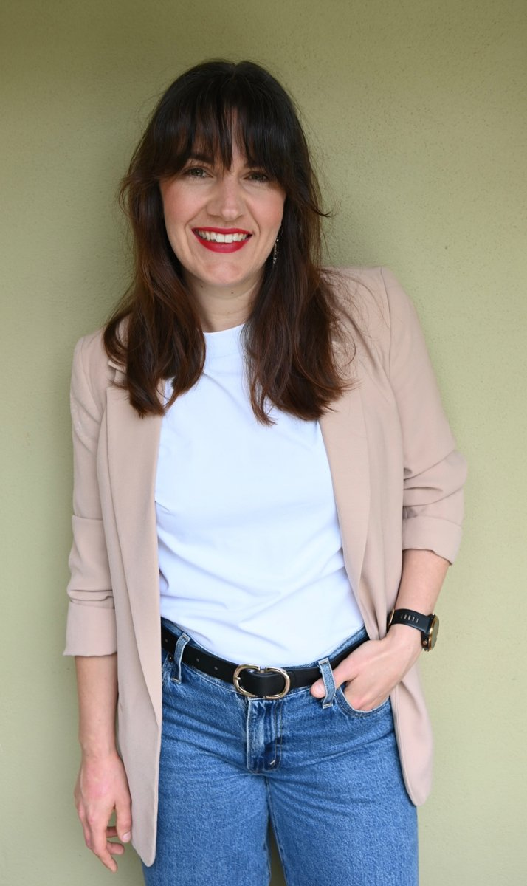

About Next Wave Cancer Rehab
Move Forward With Confidence
Experienced cancer rehabilitation, grounded in care, clarity, and experience.
Cancer treatment can leave you feeling unsure of your body: how it moves, how it responds, and what it needs next. Knowing where to start can feel overwhelming.
At Next Wave Cancer Rehab, the focus is simple, helping you safely rebuild strength, restore movement, and regain confidence in your body, at every stage of your recovery.
Megan Oster brings extensive training and experience in oncology physiotherapy, providing care that is tailored, evidence-informed, and aligned with your medical treatment. From managing pain, tightness, and fatigue to improving mobility, strength, and overall function, each session is designed around your individual needs and goals.
This is about having the right guidance, at the right time, so you can feel supported, informed, and more in control of what happens next.
Behind the Name
The name Next Wave Cancer Rehab reflects both the pathway of cancer recovery and the environment in which it takes place.
Life after a cancer diagnosis is rarely linear. It moves in waves, some large and overwhelming, others small and steady. At times they feel frightening, at other times full of hope and momentum. You never quite know what is coming next. My role is to be there with you through each of those waves, helping you adapt, rebuild, and move forward with confidence.
Living and working on the Sunshine Coast naturally brings a coastal influence to the philosophy behind the name. The ocean is a reminder of rhythm, resilience, and renewal. While deeply connected to this place, the idea of waves also extends beyond geography. It represents change, recovery, and the ongoing process of healing wherever you are.
At its heart, Next Wave is also deeply personal. It is a tribute to my Mum, and the memory of always waiting for the next wave together, finding strength, presence, and connection even in life's most difficult seasons.

Meet Megan
Principal Physiotherapist and Founder, Next Wave Cancer Rehab
I established Next Wave Cancer Rehab to offer people affected by cancer something I care deeply about: thoughtful, experienced, oncology-informed physiotherapy care, delivered in a calm and private setting.
My background spans over a decade of physiotherapy practice across Australia and the United Kingdom, with a focus on oncology rehabilitation, musculoskeletal physiotherapy, and supportive cancer care.
I understand how uncertain the body can feel during and after cancer treatment. My role is to help you understand what is happening, what is safe, and how to move forward at your pace, and in collaboration with your treating team.
Career and Experience
Clinical Experience
With over a decade of experience as a physiotherapist, I have worked across leading hospitals, private practice, and cancer support organisations in both Australia and the UK. My career has focused on oncology and musculoskeletal rehabilitation, including roles at The Royal Marsden Hospital in London and Princess Alexandra Hospital in Brisbane, where I supported people through complex surgical and cancer-related presentations. I have led and developed oncology rehabilitation services, built multidisciplinary teams, and supported people through every stage of treatment and recovery, from pre-surgical preparation to long-term rehabilitation, while consistently looking for ways to better meet patient needs.
Supportive Care
Alongside my clinical work, my role as a Senior Supportive Care Consultant with Cancer Council Queensland expanded my focus beyond physical rehabilitation to the emotional, practical, and psychosocial challenges of a cancer diagnosis. In this role, I supported people through often overwhelming periods, helping them navigate treatment pathways, make informed decisions, and connect with appropriate care, including allied health, psychological services, financial assistance, and workplace resources. This experience shaped how I think about holistic care, recognising that recovery is not only physical, but personal and multifaceted.
Leadership and Education
I am also passionate about clinical leadership, education, and service development. I have designed and contributed to oncology programs, mentored clinicians, supported research and quality improvement initiatives, and helped shape patient-centred services. This breadth of experience allows me to offer individualised, safe, and evidence-informed rehabilitation, supporting people as they work towards greater confidence, independence, and a sense of control as they move forward.
My Approach
I believe rehabilitation works best when it starts early and stays responsive. Whether someone is preparing for surgery, managing the effects of treatment, or finding their way after cancer, my aim is to offer clear guidance, honest conversation, and a plan that can adapt as things change.
Qualifications and Memberships
Megan holds a strong foundation of clinical training across oncology rehabilitation, scar therapy, pain science, lymphoedema, and Clinical Pilates, alongside registration with AHPRA and active professional memberships.
Qualifications and Training
- Bachelor of Physiotherapy: University of Queensland
- RBWH: Upper Limb, Breast and Trunk Lymphoedema Qualification
- APPI Equipment Pilates Course: Level 1 to 4
- Restore Therapy: Oncology Scar Specialist
- Restore Therapy: Advanced Understanding Scars
- Next Steps Cancer: Certified Physiotherapist
- Steel Cancer Rehabilitation: Certified Physiotherapist
- Lyn Watson: Level 1 Shoulder Course
- Know Pain: A Practical Guide for Therapeutic Neuroscience Education
- Willum Fourie: Understanding Connective Tissue, Level 1
- Mental Health First Aid: Australian Psychological Society
A note on lymphoedema
Whilst Megan holds formal qualifications in upper quadrant lymphoedema management, she does not practise as a dedicated lymphoedema therapist. Instead, she uses this training to guide patients in early identification, risk reduction, and basic management strategies, and works closely with lymphoedema therapists when more comprehensive care is required.
Registration and Memberships
- Registered Physiotherapist with AHPRA
- Member of the Australian Physiotherapy Association (APA), including Cancer, Oncology and Palliative Care group